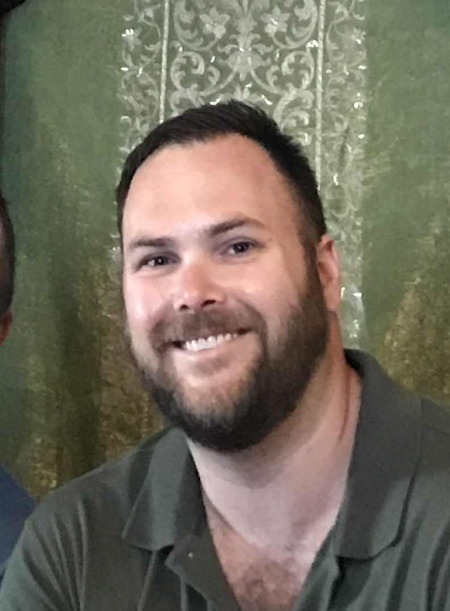

About Me

Currently a coding bootcamp student in web development with a desire to learn and foster current knowledge. Web development experience includes JavaScript (React.js/Node.js), jQuery, MySQL, MongoDB, and HTML/CSS.
Growing up in Seattle has brought about in me a deep respect and passion for the outdoors. Outside of my dog and web development, a few of my interests include travel, podcasts, movies, dining out and gardening.
Connect with Me